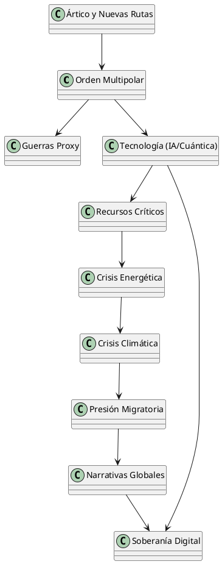

Las 10 Áreas Críticas en Geoestrategia y Poder Global (2025)
Las 10 Áreas Críticas en Geoestrategia y Poder Global (2025)
Introducción
El panorama geoestratégico actual está marcado por una dinámica compleja de competencia entre potencias, avances tecnológicos disruptivos, crisis climáticas, y nuevas formas de poder blando y duro. Este análisis identifica las diez áreas más críticas en 2025 que determinan el equilibrio global, y establece una jerarquía basada en su impacto estratégico, urgencia, y alcance.
Tabla de Áreas Críticas y Criterios de Evaluación
| # | Área Crítica | Impacto Estratégico | Urgencia Global | Complejidad Sistémica | Orden |
|---|---|---|---|---|---|
| 1 | Fragmentación del orden multipolar | Alto | Alta | Alta | 1 |
| 2 | Conflictos híbridos y guerras proxy | Alto | Alta | Media | 2 |
| 3 | Competencia tecnológica (IA/cuántica) | Alto | Media | Alta | 3 |
| 4 | Escasez y control de recursos | Media | Alta | Alta | 4 |
| 5 | Crisis energética y geopolítica | Alta | Alta | Media | 5 |
| 6 | Soberanía digital y ciberconflictos | Media | Alta | Alta | 6 |
| 7 | Seguridad del Ártico y nuevas rutas | Media | Media | Alta | 7 |
| 8 | Presión demográfica y migratoria | Media | Alta | Media | 8 |
| 9 | Poder blando y narrativas globales | Media | Media | Alta | 9 |
| 10 | Crisis climática como factor bélico | Alta | Alta | Alta | 10 |
Análisis Crítico por Área
1. Fragmentación del Orden Multipolar
La transición de un orden unipolar a uno multipolar no ha sido suave. La falta de gobernanza global efectiva ha multiplicado tensiones entre bloques (EE.UU.-China, OTAN-Rusia, India-Asia Central). Esto genera incertidumbre jurídica y conflictos latentes.
2. Conflictos Híbridos y Guerras por Proxies
El uso de actores interpuestos, como milicias, empresas militares privadas y ciberataques dirigidos, desdibuja las líneas tradicionales de conflicto y complica la atribución de responsabilidades.
3. Competencia Tecnológica
IA, computación cuántica y control de microchips se han convertido en dominios clave de la geoestrategia. La supremacía tecnológica implica poder económico, militar y cognitivo.
4. Escasez de Recursos
Litio, agua, alimentos y tierras raras se han transformado en elementos geopolíticos. África y América Latina se reposicionan como territorios estratégicos bajo nuevas formas de colonialismo económico.
5. Crisis Energética
La transición energética desequilibra el mapa del poder global: los países petroleros tradicionales pierden peso ante productores de renovables y controladores de tecnología verde.
6. Soberanía Digital
Desde TikTok hasta AWS, el control de datos, algoritmos y redes es ya una cuestión de soberanía nacional. La ciberseguridad y el espionaje digital dominan las relaciones internacionales.
7. Seguridad del Ártico
El deshielo abre rutas comerciales y despierta una carrera por la militarización y explotación de recursos, enfrentando intereses de Rusia, China, EE.UU. y la OTAN.
8. Migraciones Masivas
La presión migratoria ya no es solo humanitaria: se ha convertido en arma de presión geopolítica y factor desestabilizador interno en muchos países receptores.
9. Narrativas y Poder Blando
La batalla por el relato es más intensa que nunca: medios, plataformas, influencers, think tanks y universidades se han convertido en frentes activos del conflicto.
10. Crisis Climática
El cambio climático no solo amenaza con catástrofes naturales: también genera guerras por recursos, migraciones forzadas, y legitimación de regímenes autoritarios ante crisis de supervivencia.
Diagrama de Interdependencia (PlantUML)

Conclusión
El análisis geoestratégico de 2025 muestra un sistema multipolar inestable, con tensiones transversales en tecnología, recursos, clima y narrativa. Comprender estas interrelaciones es esencial para anticipar escenarios y redefinir estrategias nacionales y regionales.
Referencias Documentales
- Kissinger, Henry. World Order. Penguin, 2015.
- Nye, Joseph. Soft Power: The Means to Success in World Politics. PublicAffairs, 2004.
- Kaplan, Robert D. The Revenge of Geography. Random House, 2012.
- National Intelligence Council. Global Trends 2040. https://www.dni.gov/index.php/global-trends
- Foreign Affairs, The Economist, Stratfor e informes RAND Corporation (2023–2025).